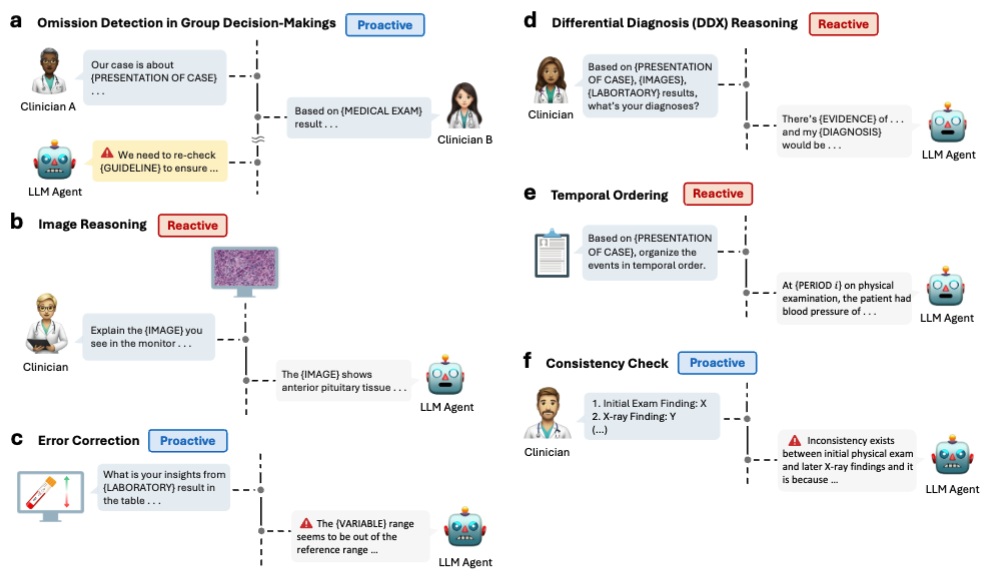

Six representative tasks from BehaviorBench, showcasing the spectrum of agent behaviors in clinical settings. The figure illustrates (a-c, f) proactive tasks where the LLM agent identifies issues or offers insights without direct prompting, and (b, d, e) reactive tasks responding to explicit clinician queries